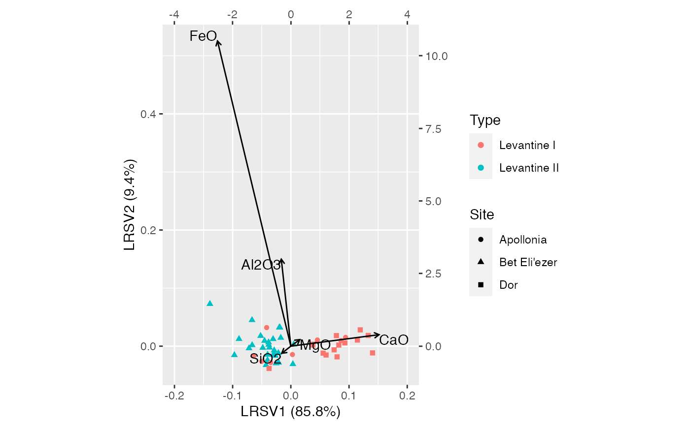
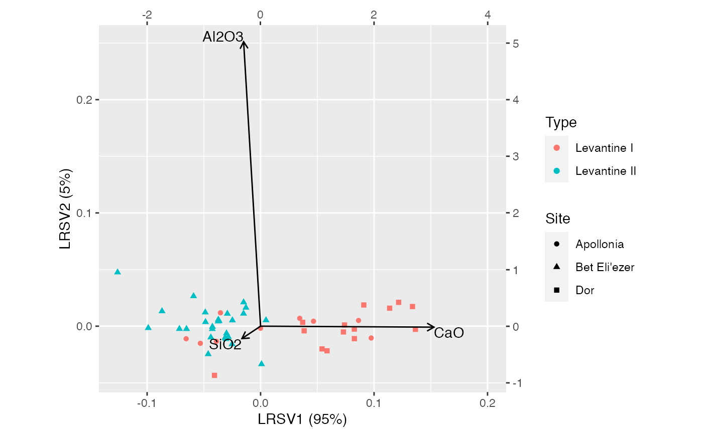

Glass composition data from archaeological sites in Israel
glass.RdSites, artifacts, and amounts of several components of the sand.
data(glass)
Format
A tibble.
Source
Baxter & Freestone (2006).
Examples
# Compare PCA to LRA on the Freestone primary class composition data # following Baxter & Freestone (2006) # (do not exclude compositional outliers) data(glass) levantine_glass <- glass %>% dplyr::filter(Site != "Banias") %>% dplyr::mutate(Type = dplyr::case_when( Site == "Dor" ~ "Levantine I", Site == "Apollonia" ~ "Levantine I", Site == "Bet Eli'ezer" ~ "Levantine II" )) # scaled principal components analysis levantine_glass %>% dplyr::select(SiO2, Al2O3, CaO, FeO, MgO) %>% princomp(cor = TRUE) %>% as_tbl_ord() %>% bind_cols_rows(dplyr::select(levantine_glass, Site, Type)) %>% print() -> pca_glass#> # A tbl_ord of class 'princomp': (50 x 5) x (5 x 5)' #> # 5 coordinates: Comp.1, Comp.2, ..., Comp.5 #> # #> # Rows: [ 50 x 5 | 2 ] #> Comp.1 Comp.2 Comp.3 ... | Site Type #> | <chr> <chr> #> 1 1.43 -0.167 1.29 | 1 Bet Eli'ezer Levantine II #> 2 2.67 -0.250 -1.44 ... | 2 Bet Eli'ezer Levantine II #> 3 1.16 -0.473 0.387 | 3 Bet Eli'ezer Levantine II #> 4 0.199 0.370 1.14 | 4 Bet Eli'ezer Levantine II #> 5 0.305 0.703 0.930 | 5 Bet Eli'ezer Levantine II #> # … with 45 more rows #> # #> # Columns: [ 5 x 5 | 0 ] #> Comp.1 Comp.2 Comp.3 ... | #> | #> 1 0.510 0.272 0.405 | #> 2 0.489 -0.337 -0.381 ... | #> 3 -0.510 -0.181 -0.463 | #> 4 0.490 -0.176 -0.501 | #> 5 0.0234 0.865 -0.474 |# completely compositional log-ratio analysis levantine_glass %>% dplyr::select(SiO2, Al2O3, CaO, FeO, MgO) %>% lra(compositional = TRUE) %>% as_tbl_ord() %>% confer_inertia("rows") %>% bind_cols_rows(dplyr::select(levantine_glass, Site, Type)) %>% print() -> lra_glass#> # A tbl_ord of class 'lra': (50 x 4) x (5 x 4)' #> # 4 coordinates: LRSV1, LRSV2, ..., LRSV4 #> # #> # Rows: [ 50 x 4 | 2 ] #> LRSV1 LRSV2 LRSV3 ... | Site Type #> | <chr> <chr> #> 1 -0.0970 -0.0153 0.0106 | 1 Bet Eli'ezer Levantine II #> 2 -0.0667 0.0450 -0.00706 ... | 2 Bet Eli'ezer Levantine II #> 3 -0.0383 0.00675 0.00669 | 3 Bet Eli'ezer Levantine II #> 4 -0.0210 -0.0283 0.00463 | 4 Bet Eli'ezer Levantine II #> 5 -0.0254 -0.0295 0.00373 | 5 Bet Eli'ezer Levantine II #> # … with 45 more rows #> # #> # Columns: [ 5 x 4 | 0 ] #> LRSV1 LRSV2 LRSV3 ... | #> | #> 1 -0.311 -0.244 0.00644 | #> 2 -0.328 2.99 2.46 ... | #> 3 3.03 0.396 -0.0286 | #> 4 -2.52 10.5 -4.53 | #> 5 0.306 0.227 -9.41 |ggbiplot(lra_glass, sec.axes = "cols", scale.factor = .05) + geom_rows_point(aes(shape = Site, color = Type)) + geom_cols_vector() + geom_cols_text(aes(label = .name), hjust = "outward", vjust = "outward") + expand_limits(x = c(-.2, .2))# completely compositional log-ratio analysis with FeO and MgO excluded levantine_glass %>% dplyr::select(SiO2, Al2O3, CaO) %>% lra(compositional = TRUE) %>% as_tbl_ord() %>% confer_inertia("rows") %>% bind_cols_rows(dplyr::select(levantine_glass, Site, Type)) %>% print() -> lra_glass#> # A tbl_ord of class 'lra': (50 x 2) x (3 x 2)' #> # 2 coordinates: LRSV1 and LRSV2 #> # #> # Rows: [ 50 x 2 | 2 ] #> LRSV1 LRSV2 | Site Type #> | <chr> <chr> #> 1 -0.0990 -0.00161 | 1 Bet Eli'ezer Levantine II #> 2 -0.0591 0.0265 | 2 Bet Eli'ezer Levantine II #> 3 -0.0366 0.00466 | 3 Bet Eli'ezer Levantine II #> 4 -0.0251 -0.0159 | 4 Bet Eli'ezer Levantine II #> 5 -0.0306 -0.0113 | 5 Bet Eli'ezer Levantine II #> # … with 45 more rows #> # #> # Columns: [ 3 x 2 | 0 ] #> LRSV1 LRSV2 | #> | #> 1 -0.329 -0.219 | #> 2 -0.299 5.02 | #> 3 3.06 -0.0173 |ggbiplot(lra_glass, sec.axes = "cols", scale.factor = .05) + geom_rows_point(aes(shape = Site, color = Type)) + geom_cols_vector() + geom_cols_text(aes(label = .name), hjust = "outward", vjust = "outward") + expand_limits(x = c(NA, .2))